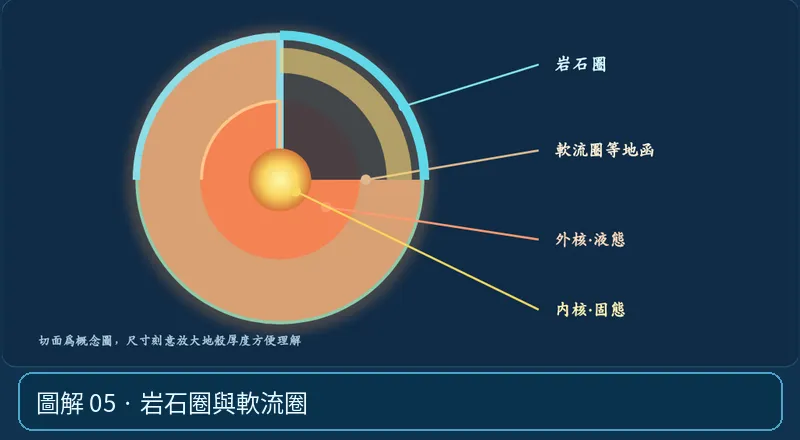

第 02 單元｜圖解 5/6｜課本 p.68–71
岩石圈與軟流圈
岩石圈較冷、堅硬，是板塊的主體；軟流圈雖可在地質時間尺度下緩慢流動，大部分仍是固態岩石，不是整層液態岩漿。
① 看一眼② 操作圖③ 自己推理④ 揭開解答
🔬 這張圖，請自己動手試
操作圖上方的頁籤、滑桿或按鈕；圖片也能左右滑動放大觀看。
互動圖解 · 岩石圈與軟流圈

原創 SVG 地科教學模型，方便理解，非真實比例、非即時地震資料；互動無法載入時仍有靜態圖。
STEP 01 · 先觀察
👀 眼睛先找線索
在力學分層頁籤先找到冷硬的岩石圈，再看它下方更容易長時間變形的區域。
💡 為什麼是這樣？
岩石圈是一整塊可運動的堅硬板塊；軟流圈多為固態、在地質時間尺度下會緩慢變形，不是充滿液態岩漿的海洋。
🎯 換個問法想一題
「板塊浮在一大盆完全液態岩漿上」是好的地球剖面嗎？
我想好了，點開看答案 ↓
不是。軟流圈主要是固態岩石，具長時間尺度的可流變性。
⚡ 一句記住：地函不是岩漿海